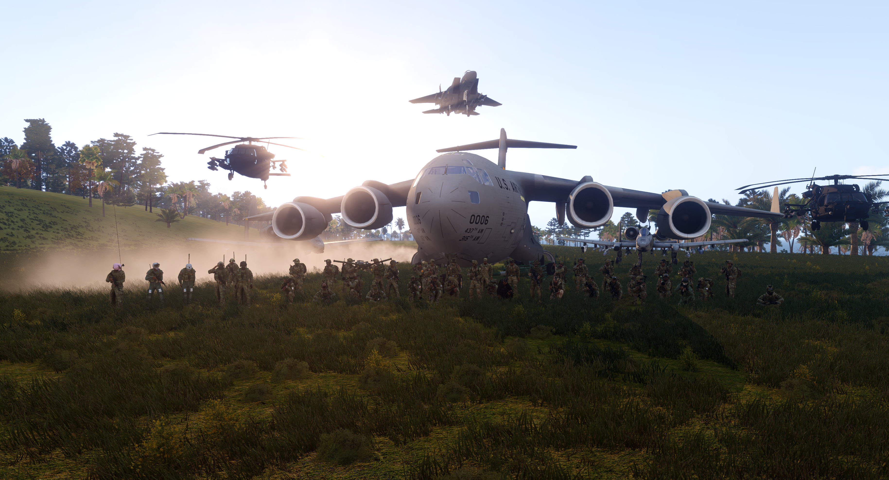
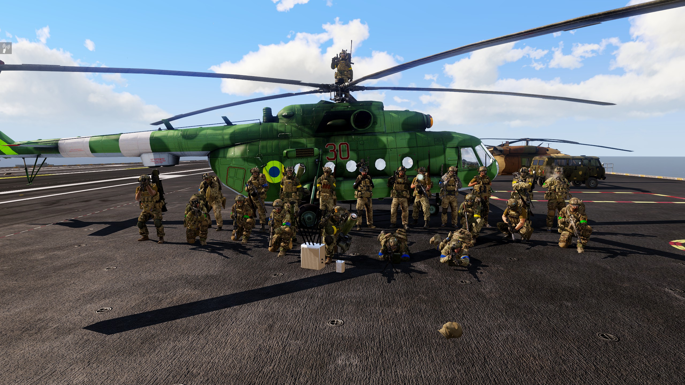

Felleskapet i Arma 3 er delt opp i 2 deler: offentlige og private. det offentlige felleskapet er for alle som vil spille Arma 3, og det er her man finner de fleste spillerene. en av de største offentlige serverene er Karmakut, serveren opp sto fra en Youtuber som heter karmakut. Karmakut har en stor spillerbase og tilbyr en offentlig server med gamemodesen Liberation. det er 24/7 server. det er også andre offentlige servere som tilbyr forskjellige gamemodes, som for eksempel Altis Life, Wasteland og King of the Hill.

Private felleskap er for spillerne som ønker begrenset tilgang til servere og spillergrupper. For å gjør det mest gøy eller mest realistisk, Noen Grupper som jeg vet om er Pequod og Shenaniges. Pequod er en gruppe som har fokus på realisme og taktikk, og de har Operationer 2 ganger i månden med Traning. Shenaniges er en gruppe som har fokus på å ha det gøy og lage morsomme opplevelser, og de har Operationer 1 gang i månden med Traning. Det er også andre server som tilbyr mer Traninger og Operationer.
